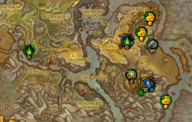

World Quest Tab
A World of Warcraft add-on which improves the UX for world quests.
Media

Looks neat... but what is it?
World Quest Tab is and add-on that improves the default UI for world quests. It adds a new tab to the quest log, which offers an easy to read list with all available world quests in a zone, or continent. This list can be sorted by criteria such as time left, name, or reward type. Players can also filter the list to only show quests with specific criteria such as reward type, quest type, or faction. The goal of this add-on is to improve the limiter UI features surrounding world quests, making it easier and faster to find what you are looking for. This, while also making sure it fits right in with the default UI, was if it was part of it. Thanks to community translators, there is full localization support for Russian, Korean, and Traditional Chinese, and partial support for German, French, Brazilian Portuguese, and Simplified Chinese.
The itch that needed stratching
World of Warcraft: Legion brought new content in the form of World Quests. These repeatable quests that rotate around over multiple days, staying available for limited time or if the player completes it. The same quest can come back in rotation some days later, where the player can complete it again. In addition to world quests, Legion brought Emissary quests. The player gets one new emissary quest each day, which stays available for three days. To complete these quests, the player must complete a certain amount of world quests for a specific faction. Upon completion they can collect a box containing various loot. By default these quests are marked on the map with simple quest indicators. The player can hover over these indicators to see a tooltip which includes the name, the remaining time available, the objective, the reward, and the faction of the quest. This is where the main issue lays. The player has to hover over every individual quest marker to identify the quest and see if it is of use to them or not. And this for every individual zone. If the player is looking to upgrade their equipment, or find a quest for a specific faction for their emissary quest, they have no way to easily filter these out.

Default WoW UI for world quests are map icons with a tooltip.
The thought process
The first issue to tackle was having to open the map of every individual zone to see which quests are available, and some zones might rarely have only one quest available. The best way to solve this was to make an overview of all the available quests. An effective way of doing so is to present the quests in a simple list. One of my personal goals with add-ons is to make them fit with the default WoW UI as if it could as well be part of it. The map already has a quest list to the side, which would also be a perfect location for a list of world quests. To make this possible, I decided to use some trickery, and add two tabs at the top of the default list. These could be used to switch between the panel with regular quests, and my list. After creating a basic list and having found a location for it, I had to decide what information this list should show. This so the player can quickly decide if they are interested or not. The name helps to identify the quest. A small icon indicates the faction the quest belongs to. Another icon indicates the type of quest: If it's elite it might require a group, some people aren't interested in PvP quests, and other might be specifically looking for a profession or pet battle quest. A color coded time message helps the player decide the urgency for completing the quest. And most importantly; An icon of the reward for obvious reasons. A number on the reward icon also indicates the value of the reward: The amount of gold or resources, the item level increase of a relic, or the amount of Artifac Power an item grants.
The list of world quests next to the world map.
The map icon themselves were also in need of an update. This way, if the player in out in the world they could quickly look at the nearby icons to determine their next target. To help with this, the default icons were replaced with an image of the reward. The elite outline could stay as players might decide to avoid these if they are playing solo. As some icons might be difficult to distinguish if they are equipment, a relic, or an item that grands Artifact Power, a color coded ring was added. Each reward type has its own color. And just like the quest list, a color coded message of the remaining time has added underneath the icon. The flight map eventually received the same treatment. This would help players find which flight point would bring them closer to their desired quest. This proved to be a fair challenge to implement due to Blizzard's newer data provider system. I needed the provided icons to update their appearance, but these icons are made on the fly though one of these data providers. However, these providers have no identifier, so I had to dig through a table to find a table containing some specific variables. Not optimal, but if it works it works, and such is the life of a programmer.

The new and updated world map icons quickly providing usefull information.
The new and updated world map icons quickly providing usefull information.
One last thing of importance, is the ease of use for the player, and how each player has their own playstyle. One player might be trying to find a specific faction's quests for their emissary. Another player might be after new equipment. And another player might just enjoy completing every single quest available. To allow for these different play styles, I decided to offer a drop down menu with different sorting options. This way players can sort the list of quests to more easily find what they are looking for. Another addition is the ability to filter the quest list. This way the player can change to list to only show quests for specific factions, certain quest types, or ones that only offer specific rewards. Other options also include the ability to keep the default map pins, disable certain features on map pins such as time or reward type colors.
One game, multiple languages
World of Warcraft is a big game that crosses many language barriers. Aside from looks, a big factor to make an add-on look like it's official, is through localization. English could be difficult for a non-English speaker, and English in an otherwise localized game looks out of place. Luckily I don't have to learn 11 different languages, as Curseforge offers the opportunity for other players to help localize text for you. On the Curseforge page of an add-on, the author has the option to enable localization, and upload the text that requires translations. Users can then offer translations for the different pieces of text, and correct or improve each other's works. The author can then export the translated text to use in their add-on. Thanks to a hand full of players across different regions, World Quest Tab can offer full localization for Korean, Russian, and Traditional Chinese. And partial localization for German, Latin American Spanish, Franch, Brazilian Portuguese, and Simplified Chinese clients.
Development Gallery
This gallery contains images made during the development of the add-on.